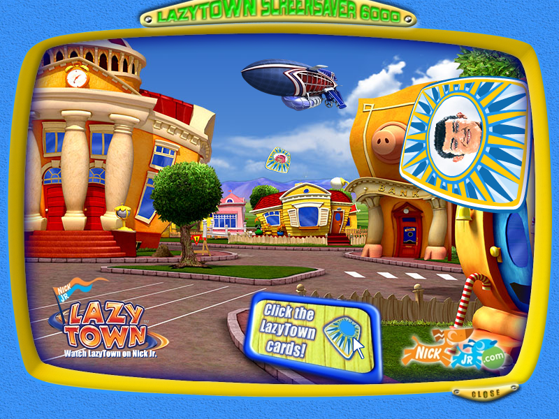

Loading navbar...
LazyTown Extras
LazyTown Desktop Icons
DOWNLOAD
7 .ico (Windows Icon) files zipped (87.5 KB)
LazyTown Screensaver 6000

An interactive screensaver! Click on the cards to view the characters on them.
DOWNLOAD
.exe file zipped (Windows) (2.05 MB)


 7 .ico (Windows Icon) files zipped (87.5 KB).exe file zipped (Windows) (2.05 MB)
7 .ico (Windows Icon) files zipped (87.5 KB).exe file zipped (Windows) (2.05 MB)